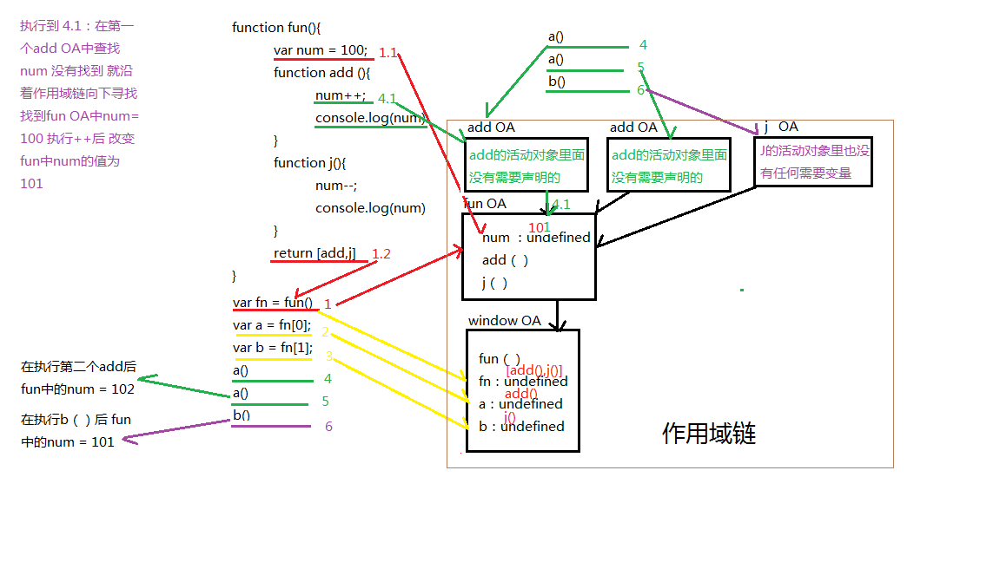

js代码在执行前会做的几件事情：
1.代码检测
2.预编译：在执行代码之前会对代码中的函数以及变量提前声明 并且做一些其他的处理
1.函数在执行前的一瞬间，会生成一个OA（object action）对象
2.函数的形参作为OA对象的属性名，实参作为AO对象的属性值
3.分析var声明，变量名作为AO对象的属性名，值为undefined，如果遇到和参数同名的变量不去做任何改变
4.分析函数声明，函数名作为AO 对象的属性名，值为函数体，如果遇到同名函数直接覆盖
接下来我们来分析这段代码：（按照预编译的四步走）
function fun(a){
console.log(a)
var a = 100
console.log(a)
}
fun(10)
1.在执行fun之前产生一个fun OA对象 ，
2.函数的形参a = 10 ，存入AO对象
3.var声明了一个a 值为undefined
4.分析函数 这个函数里面并没有内层函数
做完以上分析之后 再来执行这个程序 执行过程中碰到变量的输出或改变值 就去OA对象中找：
console.log(a) 此时a = 10 输出10
a = 100 此时a=100
console.log(a) 输出100
这是一个函数整体的执行过程，而闭包的形成就是在一个函数里面嵌套一个或多个函数，接下来我们再来分析闭包
function a(){
var num = 100;
function b(){
num ++;
console.log(num)
}
return b;
}
var fun = a()
fun()
fun()
1.在a()执行前生成一个OA对象
2.没有形参
3.声明var num = undefined
3.声明函数b() 值为函数体
然后执行a() 给num复制为100，然后返回b()函数 fun=function b(){ } 接下来在执行到fun()时：
1.在fun()执行前产生一个OA对象
2.没有形参
3.没有var声明
4.没有函数声明
然后执行b()函数，此时num++，会先在b()自己的作用于内查找有没有num这个变量 如果没有沿着作用域链去查找num
找到a()中有num变量 这是对a()中的num执行++操作 所以a()中的num会发生改变 num=101
后续又执行了一次fun() 所有操作与上一个fun相同 但是此时a()中的num=101 再进行++操作后 num = 102
用图像化来表示整个程序的执行过程中OA发生的变化

*在整个程序执行过程中 最最需要注意的是 函数每执行一次都会产生一个相应的OA对象
就算是同一个函数 只要再次执行都会产生一个对应的OA活动对象